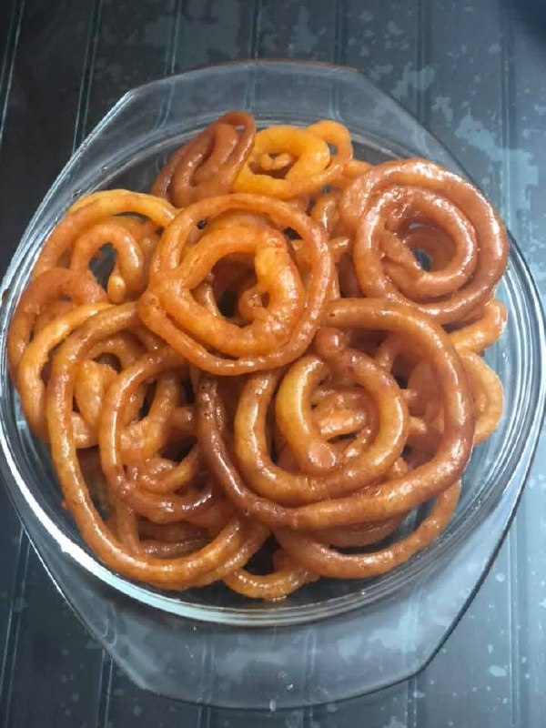

Jalebi
Crispy, syrup-soaked spirals of sweetness — a festive favorite across South Asia! Jalebi is crunchy outside, juicy inside, and irresistible with a cup of tea.
Ingredients
- 1 cup all-purpose flour (maida)
- 2 tbsp cornflour
- 1/2 cup yogurt
- 1/4 tsp baking soda
- 1 tbsp ghee or oil (for batter)
- Water as needed to make a thick batter
- Oil or ghee for deep frying
- For Sugar Syrup (Chasni):
- 1 cup sugar
- 1/2 cup water
- 1/4 tsp cardamom powder
- Few strands of saffron (optional)
- 1/2 tsp lemon juice
Instructions
- In a bowl, mix flour, cornflour, and yogurt. Add water little by little to make a smooth, thick batter. Stir in baking soda and 1 tbsp ghee. Cover and let it ferment for 6-8 hours or overnight for best results.
- To make the sugar syrup, boil sugar and water together until it reaches one-string consistency. Add cardamom powder, saffron, and lemon juice. Keep it warm on low heat.
- Pour the fermented batter into a piping bag or squeeze bottle with a small nozzle (you can also use a clean ketchup bottle).
- Heat oil or ghee in a flat pan over medium heat. Squeeze the batter in spiral shapes directly into the hot oil.
- Fry until golden and crisp, then immediately dip them in the warm sugar syrup for about 20-30 seconds.
- Remove, drain the excess syrup, and serve warm or at room temperature.
- Enjoy your homemade jalebis with a sprinkle of chopped pistachios or alongside a bowl of rabri!